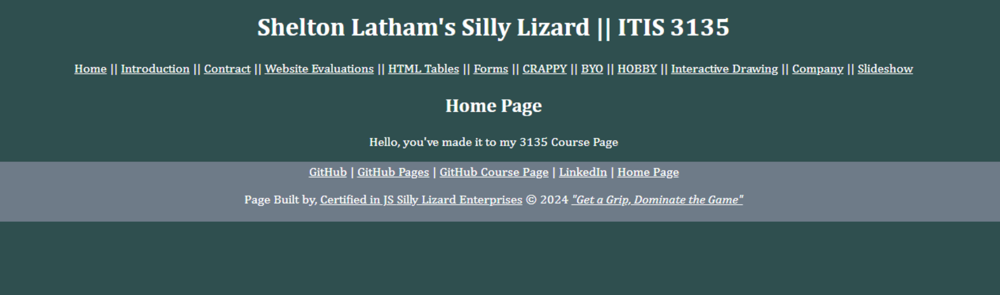

Latham, Shelton
 Link to Website- File should not be in the z_archives folder
- Add the special character for the ampersand on the introduction page
- Good contrast but I believe we are supposed to use a color other than white for our text
- Repetion is good acrross all pages
- Pages have a header, main, footer, and nav bar
- Pages have a unique header in H2
- Missing CSS and HTML validation
- All images load correctly
- Accumulus is present on all pages
- Homepage link in footer does not work